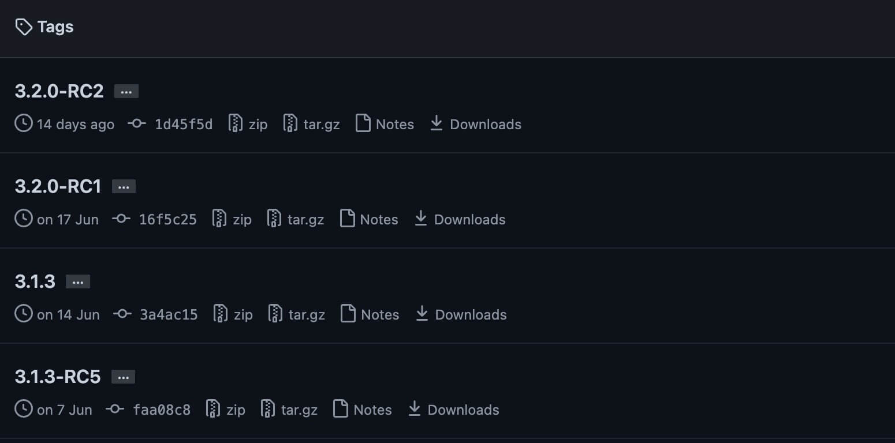

Instalación de Scala
El lenguaje Scala puede ejecutarse en sistemas como Windows, Linux, Unix, Mac OS X, etc.
Scala se basa en Java y utiliza en gran medida las bibliotecas de clases y variables de Java. Antes de usar Scala, debe instalar Java (versión >1.5).
Instalación de Scala en Mac OS X y Linux
Paso 1: Configuración de Java
Asegúrate de tener instalado localmente JDK 1.5 o superior, y de haber configurado la variable de entorno JAVA_HOME y el directorio bin del JDK.
Podemos usar el siguiente comando para ver si Java está instalado:
$ java -version java version "1.8.0_31" Java(TM) SE Runtime Environment (build 1.8.0_31-b13) Java HotSpot(TM) 64-Bit Server VM (build 25.31-b07, mixed mode) $
Luego, podemos verificar si el compilador de Java está instalado. Ingresa el siguiente comando para comprobarlo:
$ javac -version javac 1.8.0_31 $
Si aún no está instalado, puedes consultar nuestroConfiguración del entorno de desarrollo de Java。
Para instalar Scala, se recomienda usar el instalador de Scala impulsado por Coursiercs setup
En macOS usabrewel comando para instalar: En Linux usacurlel comando para descargar el paquete de código fuente e instalarlo. Arquitectura x86-64: Arquitectura ARM64: Puedes usaruname -mel comando para ver la arquitectura de la CPU de tu servidor: Podemos descargar el paquete binario de Scala desde la dirección de Githubhttps://github.com/lampepfl/dotty/tagsEn este tutorial descargaremos la versión2.11.7, como se muestra en la siguiente figura: brew install coursier/formulas/coursier && cs setup
curl -fL https://github.com/coursier/launchers/raw/master/cs-x86_64-pc-linux.gz | gzip -d > cs && chmod +x cs && ./cs setup
curl -fL https://github.com/VirtusLab/coursier-m1/releases/latest/download/cs-aarch64-pc-linux.gz | gzip -d > cs && chmod +x cs && ./cs setup
# uname -m
x86_64
Instalación del paquete binario
Haz clic en el número de versión que deseas descargar y desplázate hasta la parte inferior de la página para ver el paquete de archivos de descarga:

Descomprime el paquete de archivos y puedes moverlo a /usr/local/share:
mv scala-2.11.7 scala # 重命名 Scala 目录 mv /download/scalapath /usr/local/share # 下载目录需要按你实际的下载路径
Modifica las variables de entorno. Si no eres administrador, puedes usar sudo para obtener privilegios de administrador y modificar el archivo de configuración profile:
vim /etc/profile 或 sudo vim /etc/profile
Agrega al final del archivo:
export PATH="$PATH:/usr/local/share/scala/bin"
Guarda y sal con :wq!, reinicia la terminal y ejecuta el comando scala. Si se muestra la siguiente información, la instalación fue exitosa:
$ scala Welcome to Scala version 2.11.7 (Java HotSpot(TM) 64-Bit Server VM, Java 1.8.0_31). Type in expressions to have them evaluated. Type :help for more information.
Nota:Al compilar, si hay caracteres chinos, pueden aparecer caracteres distorsionados. Para la solución, consulta:Solución al problema de caracteres chinos distorsionados en Scala
Instalación de Scala en Windows
Paso 1: Configuración de Java
El método de verificación ya se explicó anteriormente, así que no lo repetiremos aquí.
Si aún no está instalado, puedes consultar nuestroConfiguración del entorno de desarrollo de Java。
A continuación, podemos descargar el paquete binario de Scala desde el sitio web oficial de Scalahttp://www.scala-lang.org/downloads(parte inferior de la página). En este tutorial descargaremos la versión2.11.7, como se muestra en la siguiente figura:

Después de la descarga, haz doble clic en el archivo .exe e instala paso a paso. Durante la instalación puedes usar el directorio de instalación predeterminado.
Una vez instalado Scala, el sistema lo notificará automáticamente. Haz clic en Finish para completar la instalación.
Haz clic derecho en Mi PC y haz clic en "Propiedades" para entrar en la página que se muestra. Ahora comienza la configuración de las variables de entorno: haz clic derecho en [Mi PC] -> [Propiedades] -> [Configuración avanzada del sistema] -> [Variables de entorno], como se muestra:

Configura la variable SCALA_HOME: haz clic en Nueva y en el campo de nombre de variable ingresa:SCALA_HOME: en el campo de valor de variable ingresa:D:\Program Files（x86）\scala Este es el directorio de instalación de Scala, que varía según cada caso. Si lo instalaste en la unidad C, cambia D por C.

Configura la variable Path: busca 'Path' en las variables del sistema, como se muestra, y haz clic en Editar. Agrega la siguiente ruta al principio del campo 'Valor de la variable': %SCALA_HOME%\bin;%SCALA_HOME%\jre\bin;
Nota:El punto y coma al final；no debe omitirse.

Configura la variable Classpath: busca 'Classpath' en las variables del sistema, como se muestra, y haz clic en Editar. Si no existe, haz clic en 'Nueva':
- 'Nombre de la variable': ClassPath
- 'Valor de la variable': .;%SCALA_HOME%\bin;%SCALA_HOME%\lib\dt.jar;%SCALA_HOME%\lib\tools.jar.;
Nota:El '.;' al principio del 'Valor de la variable' no debe omitirse. Finalmente, haz clic en Aceptar.

Verifica si las variables de entorno se configuraron correctamente: abre 'cmd' para comprobarlo. Haz clic en [Inicio], escribe cmd en el cuadro de entrada y presiona 'Enter'. Luego escribe scala y presiona Enter. Si las variables de entorno están configuradas correctamente, deberías ver esta información.

A continuación se enumeran los directorios de ubicación para diferentes sistemas (como referencia):
| Entorno del sistema | Variable | Valor (ejemplo) |
|---|---|---|
| Unix | $SCALA_HOME |
/usr/local/share/scala |
$PATH |
$PATH:$SCALA_HOME/bin |
|
| Windows | %SCALA_HOME% |
c:\Progra~1\Scala |
%PATH% |
%PATH%;%SCALA_HOME%\bin |